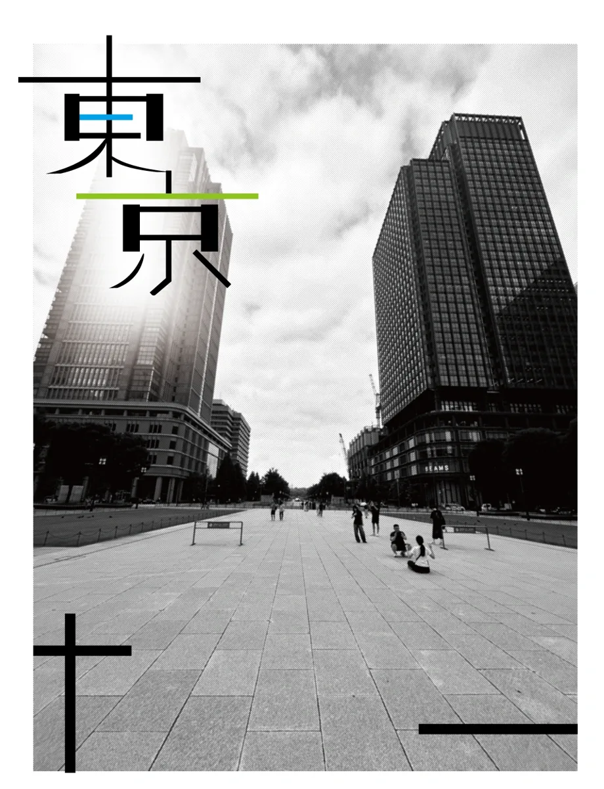
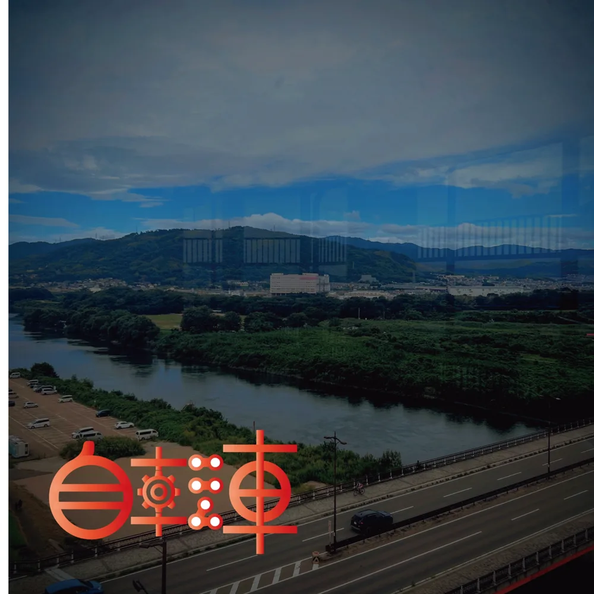
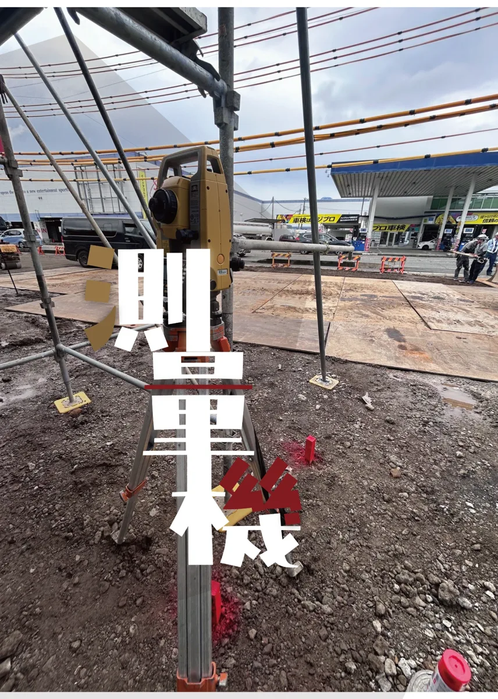
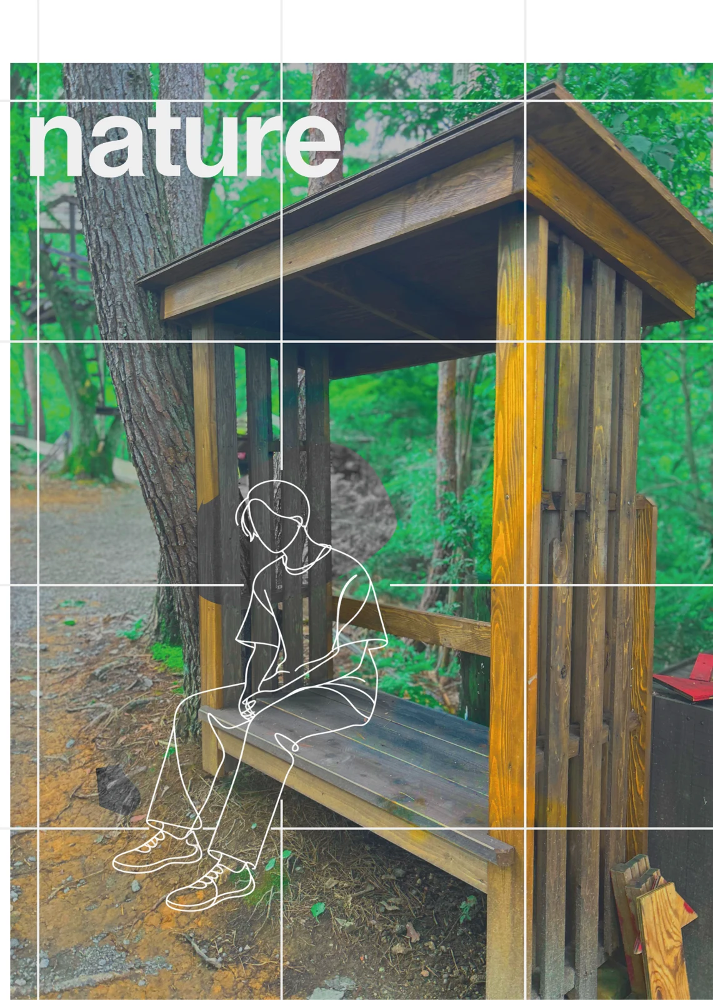
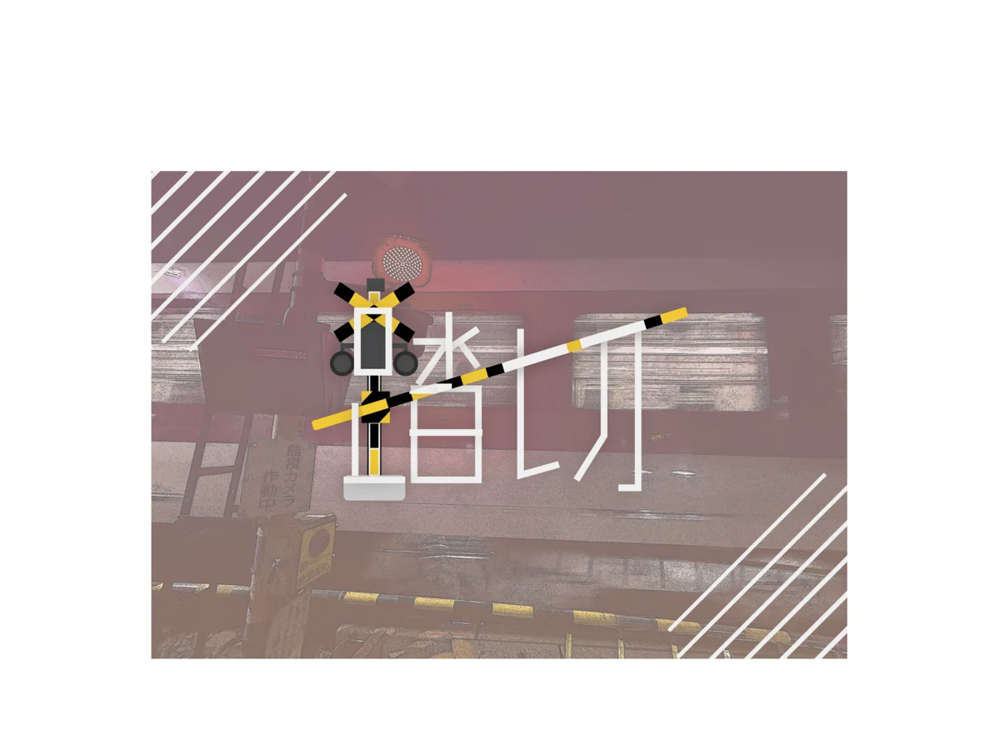
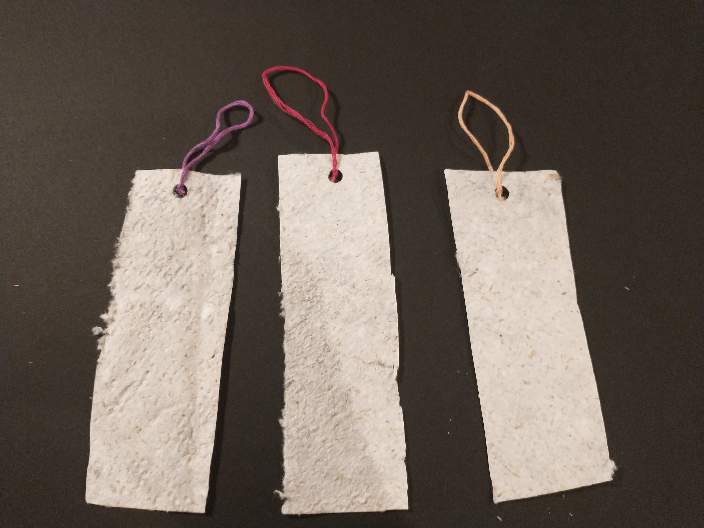
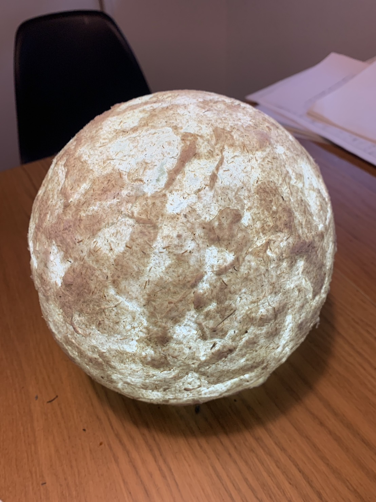

03
Works
作品集
Selected works / 2026
設計から、表現へ。
映像の時間、立体の形、展示空間の体験。異なる媒体を通じ、意図を具体的な形へ落とし込む制作に取り組んでいます。
映像データの掲載準備中です。
01 / Motion Design · After Effects
ZONE — 集中の可視化
陸上競技の前に経験した「ゾーン」をテーマに、集中へと意識が移り変わる感覚を映像で表現しています。グリッド上で円の大きさと線の動き、リズムを変化させ、静けさと緊張の関係を探っています。
- 担当
- コンセプト・映像設計・モーション制作
- 状態
- 映像スタディ / 制作途中
02 / Spatial Design · Exhibition Concept
映像と木工をつなぐ展示設計
映像を単独で見せるのではなく、木工フレームの奥に配置し、鑑賞者の視線を映像へ導く展示を構想しています。神山の自然風景と幾何学的な映像表現を組み合わせ、集中や静けさを感じる空間を設計する試みです。
- 担当
- 展示コンセプト・木工フレームの設計検討・視線誘導
- 状態
- 構想・設計検討中
Exhibition concept / 構想の要素
01 木工フレーム物理的な境界をつくる
02 視線誘導映像へ意識を向ける
03 映像表現集中と静けさを伝える

作品画像の掲載準備中です。
03 / 3D Modeling · Form Study
石膏像の3Dモデリング
石膏像を題材に、自分で3Dモデリングを行いました。顔の起伏や輪郭、頭部から胸部、台座までの形状を立体として捉え、デジタルモデルと実物の見え方を比較しました。
- 担当
- 3Dモデリング・形状の検討
- 成果
- デジタルモデル・立体の比較記録
Photography × Typography
体験をいつまでも
訪れた街、自転車で走った道、インターンで学んだ現場。よく訪れたキャンプ場や、いつもの踏切。特別な体験も身近な日常も、写真と文字、イラストで残したシリーズです。

Study 01 / Illustrator
東京
東京を訪れたときに撮影した写真をもとに、風景と「東京」の文字を組み合わせました。モノクロの写真に、青と緑の線を添えたタイポグラフィ作品です。

Study 02 / Illustrator
自転車
片道40kmを自転車で走ったときに撮影した写真を使いました。車輪や歯車、チェーンを文字に組み込み、自転車での体験を写真とタイポグラフィで表現しました。

Study 03 / Illustrator
測量機
沼津の工務店でのインターンで学んだ現場の写真と、「測量機」の文字を組み合わせました。現場での学びを、写真と文字による作品にしました。

Study 04 / Illustrator
nature
よく訪れていたキャンプ場の写真をもとに制作しました。自然の中で過ごす時間の楽しさを、写真と人物の線画を組み合わせて表現しています。

Study 05 / Illustrator
踏切
日常の風景を記録しておきたいという思いから制作しました。身近な踏切の写真に、遮断機を組み込んだ文字を重ね、いつもの景色を作品として残しました。
FIELDNOTE.PROJECT / 01工程表を生成
Product Design / Frontend Engineering / 2026
FIELDNOTE自由に描く。工程につなげる。
建設現場の工程を、自由なキャンバス上で視覚的に整理するWebアプリ。タスクカードの配置と矢印による依存関係の設定から、ガント工程表のプレビューを生成します。UI/UX設計からフロントエンド実装まで取り組んでいる開発中のプロダクトです。
- Focus
- 現場の工程計画 / 直感的な編集
- Implemented
- カード・矢印編集、Undo/Redo、工程表プレビュー、CSV/JSON出力
- Status
- MVP開発・検証中

Bamboo Craft
竹のしおり
放置竹林問題に着目し、竹に新しい価値を与えるために制作しました。 コンテストでは落選しましたが、自分が良いと思うだけでは価値は届かず、 相手に伝わる形まで設計する必要があると学びました。

Bamboo Craft
竹のランプシェード
竹紙を光にかざしたときに感じた温かさを活かし、ランプシェードを制作しました。 この制作は、竹紙を作ること自体ではなく、 誰にどんな価値を届けるのかを考えるきっかけになりました。